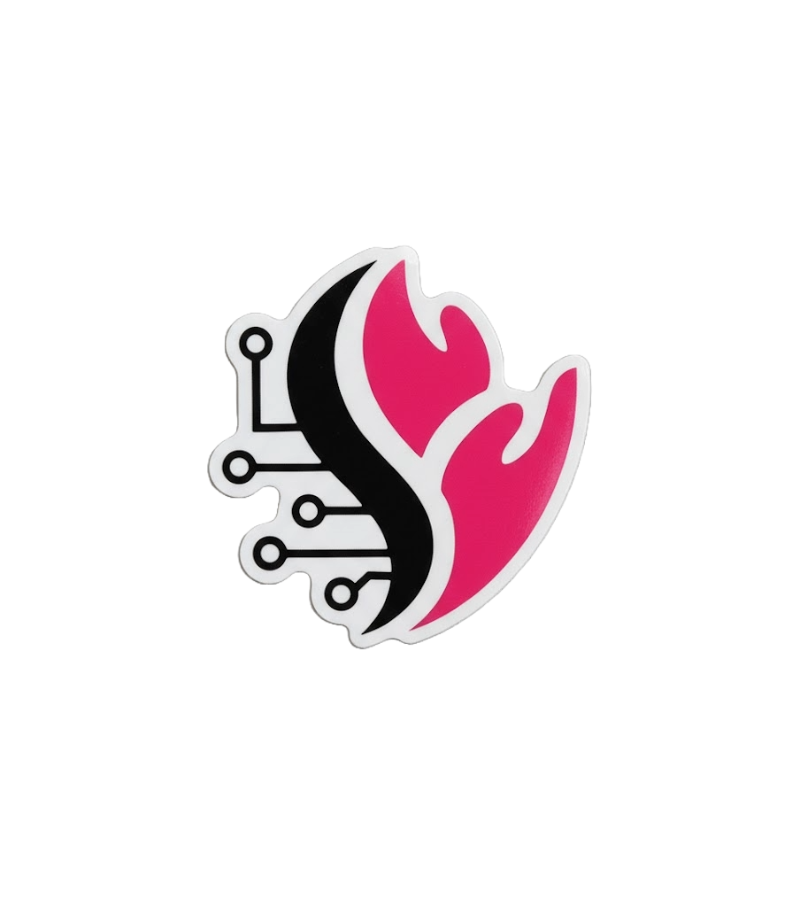

Code&Care
Inovação em Engenharia da Computação
Desenvolvendo soluções tecnológicas através da integração de software e hardware
Conheça o Projeto ↓Inovação em Engenharia da Computação
Desenvolvendo soluções tecnológicas através da integração de software e hardware
Conheça o Projeto ↓Somos um grupo de estudantes de Engenharia da Computação da FIAP, dedicados a criar soluções inovadoras em parceria com a ACHE.
Nossa missão é desenvolver para a Aché uma solução completa que una tecnologia de hardware e software, com o objetivo de otimizar o controle, a análise e a gestão dos produtos farmacêuticos da empresa. Buscamos integrar inovação e eficiência em um único projeto, promovendo avanços tecnológicos que contribuam para processos mais ágeis, seguros e inteligentes.
A parte de hardware é baseada em visão computacional, permitindo identificar e analisar os produtos Aché por meio da leitura de suas embalagens. Esse sistema é capaz de verificar se um item está danificado, fora do padrão, incorreto ou adequado, tornando possível realizar o controle de qualidade de forma mais autônoma, precisa e eficiente, reduzindo falhas humanas e garantindo maior confiabilidade nos resultados.
Já a parte de software consiste em um site interno desenvolvido para que os colaboradores possam enviar planilhas, analisar arquivos e gerenciar dados de maneira centralizada. Dentro da plataforma, também há um chatbot inteligente que auxilia na interpretação e análise dos arquivos, oferecendo suporte à gestão e ajudando na tomada de decisões estratégicas com base em dados concretos.
Com essa integração entre hardware e software, nossa missão é impulsionar a inovação tecnológica dentro da Aché, oferecendo automação, eficiência e precisão em seus processos internos, e contribuindo para um futuro mais digital, inteligente e sustentável na indústria farmacêutica.

Product Owner (PO) & Engenheiro de Software

Analista de comunicação & Marketing

Designer 3D & Projetista

Gerente de Projeto & Engenheiro de Implementação Física

Desenvolvedor Full Stack & Engenheiro de Software Web

Desenvolvedor & Suporte
Uma parceria entre FIAP e ACHE para desenvolver soluções tecnológicas que integram hardware e software de forma inovadora.
Este projeto nasceu da colaboração entre a FIAP, referência em educação tecnológica, e a ACHE, uma das principais empresas farmacêuticas do Brasil.
Nosso objetivo é aplicar os conhecimentos adquiridos durante o curso de Engenharia da Computação para desenvolver uma solução completa que integra componentes de hardware e software.
O projeto abrange desde a concepção e prototipagem de circuitos eletrônicos até o desenvolvimento de interfaces de software intuitivas e eficientes.
Conheça as soluções de software que desenvolvemos para o projeto
Conheça os componentes físico das nossas soluções.
Função/Subtítulo